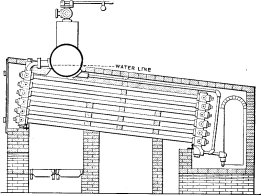

Steam: its Generation and Use
Table of Contents Previous Chapter
Quite as much may be learned from the records of failures as from those of success. Where a device has been once fairly tried and found to be imperfect or impracticable, the knowledge of that trial is of advantage in further investigation. Regardless of the lesson taught by failure, however, it is an almost every-day occurrence that some device or construction which has been tried and found wanting, if not worthless, is again introduced as a great improvement upon a device which has shown by its survival to be the fittest.
The success of the Babcock & Wilcox boiler is due to many years of constant adherence to one line of research, in which an endeavor has been made to introduce improvements with the view to producing a boiler which would most effectively meet the demands of the times. During the periods that this boiler has been built, other companies have placed on the market more than thirty water-tube or sectional water-tube boilers, most of which, though they may have attained some distinction and sale, have now entirely disappeared. The following incomplete list will serve to recall the names of some of the boilers that have had a vogue at various times, but which are now practically unknown: Dimpfel, Howard, Griffith & Wundrum, Dinsmore, Miller “Fire Box”, Miller “American”, Miller “Internal Tube”, Miller “Inclined Tube”, Phleger, Weigant, the Lady Verner, the Allen, the Kelly, the Anderson, the Rogers & Black, the Eclipse or Kilgore, the Moore, the Baker & Smith, the Renshaw, the Shackleton, the “Duplex”, the Pond & Bradford, the Whittingham, the Bee, the Hazleton or “Common Sense”, the Reynolds, the Suplee or Luder, the Babbit, the Reed, the Smith, the Standard, etc., etc.
It is with the object of protecting our customers and friends from loss through purchasing discarded ideas that there is given on the following pages a brief history of the development of the Babcock & Wilcox boiler as it is built to-day. The illustrations and brief descriptions indicate clearly the various designs and constructions that have been used and that have been replaced, as experience has shown in what way improvement might be made. They serve as a history of the experimental steps in the development of the present Babcock & Wilcox boiler, the value and success of which, as a steam generator, is evidenced by the fact that the largest and most discriminating users continue to purchase them after years of experience in their operation.
No. 1. The original Babcock & Wilcox boiler was patented in 1867. The main idea in its design was safety, to which all other features were sacrificed wherever they conflicted. The boiler consisted of a nest of horizontal tubes, serving as a steam and water reservoir, placed above and connected at each end by bolted [Pg 40] joints to a second nest of inclined heating tubes filled with water. The tubes were placed one above the other in vertical rows, each row and its connecting end forming a single casting. Hand-holes were placed at each end for cleaning. Internal tubes were placed within the inclined tubes with a view to aiding circulation.
No. 2. This boiler was the same as No. 1, except that the internal circulating tubes were omitted as they were found to hinder rather than help the circulation.
Nos. 1 and 2 were found to be faulty in both material and design, cast metal proving unfit for heating surfaces placed directly over the fire, as it cracked as soon as any scale formed.
No. 3. Wrought-iron tubes were substituted for the cast-iron heating tubes, the ends being brightened, laid in moulds, and the headers cast on.
The steam and water capacity in this design were insufficient to secure regularity of action, there being no reserve upon which to draw during firing or when the water was fed intermittently. The attempt to dry the steam by superheating it in the nest of tubes forming the steam space was found to be impracticable. The steam delivered was either wet, dry or superheated, according to the rate at which it was being drawn from the boiler. Sediment was found to lodge in the lowermost point of the boiler at the rear end and the exposed portions cracked off at this point when subjected to the furnace heat.
No. 4. A plain cylinder, carrying the water line at its center and leaving the upper half for steam space, was substituted for the nest of tubes forming the steam and water space in Nos. 1, 2 and 3. The sections were made as in No. 3 and a mud drum added to the rear end of the sections at the point that was lowest and farthest removed from the fire. The gases were made to pass off at one side and did not come into contact with the mud drum. Dry steam was obtained through the increase of separating surface and steam space and the added water capacity furnished a storage for heat to tide over irregularities of firing and feeding. By the addition of the drum, the boiler became a serviceable and practical design, retaining all of the features of safety. As the drum was removed from the direct action of the fire, it was not subjected to excessive strain due to unequal expansion, and its diameter, if large in comparison with that of the tubes formerly used, was small when compared with that of cylindrical boilers. Difficulties were encountered in this boiler in securing reliable joints between the wrought-iron tubes and the cast-iron headers.
No. 5. In this design, wrought-iron water legs were substituted for the cast-iron headers, the tubes being expanded into the inside sheets and a large [Pg 41] cover placed opposite the front end of the tubes for cleaning. The tubes were staggered one above the other, an arrangement found to be more efficient in the absorption of heat than where they were placed in vertical rows. In other respects, the boiler was similar to No. 4, except that it had lost the important element of safety through the introduction of the very objectionable feature of flat stayed surfaces. The large doors for access to the tubes were also a cause of weakness.
An installation of these boilers was made at the plant of the Calvert Sugar Refinery in Baltimore, and while they were satisfactory in their operation, were never duplicated.
No. 6. This was a modification of No. 5 in which longer tubes were used and over which the gases were caused to make three passes with a view of better economy. In addition, some of the stayed surfaces were omitted and handholes substituted for the large access doors. A number of boilers of this design were built but their excessive first cost, the lack of adjustability of the structure under varying temperatures, and the inconvenience of transportation, led to No. 7.
No. 7. In this boiler, the headers and water legs were replaced by T-heads screwed to the ends of the inclined tubes. The faces of these Ts were milled and the tubes placed one above the other with the milled faces metal to metal. Long bolts passed through each vertical section of the T-heads and through connecting boxes on the heads of the drums holding the whole together. A large number of boilers of this design were built and many were in successful operation for over twenty years. In most instances, however, they were altered to later types.
No. 8 |

No. 9 |
Nos. 8 and 9. These boilers were known as the Griffith & Wundrum type, the concern which built them being later merged in The Babcock & Wilcox Co. Experiments were made with this design with four passages of the gases across the tubes and the downward circulation of the water at the rear of the boiler was carried to the bottom row of tubes. In No. 9 an attempt was made to increase the safety and reduce the cost by reducing the amount of steam and water capacity. A drum at right angles to the line of tubes was used but as there was no provision made to secure dry steam, the results were not satisfactory. The next move in the direction of safety was the employment of several drums of small diameter instead of a single drum.
This is shown in No. 10. A nest of small horizontal drums, 15 inches in diameter, was used in place of the single drum of larger diameter. A set of circulation tubes was placed at an intermediate angle between the main bank of heating tubes and the horizontal drums forming the steam reservoir. These circulators were to return to the rear end of the circulating tubes the water carried up by the circulation, and in this way were to allow only steam to be delivered to the small drums above. There was no improvement in the action of this boiler over that of No. 9.
The four passages of the gas over the tubes tried in Nos. 8, 9 and 10 were not found to add to the economy of the boiler.
No. 11. A trial was next made of a box coil system, in which the water was made to transverse the furnace several times before being delivered to the drum above. The tendency here, as in all similar boilers, was to form steam in the middle of the coil and blow the water from each end, leaving the tubes practically dry until the steam found an outlet and the water returned. This boiler had, in addition to a defective circulation, a decidedly geyser-like action and produced wet steam.
All of the types mentioned, with the exception of Nos. 5 and 6, had between their several parts a large number of bolted joints which were subjected to the action [Pg 43] of the fire. When these boilers were placed in operation it was demonstrated that as soon as any scale formed on the heating surfaces, leaks were caused due to unequal expansion.
No. 12. With this boiler, an attempt was made to remove the joints from the fire and to increase the heating surface in a given space. Water tubes were expanded into both sides of wrought-iron boxes, openings being made for the admission of water and the exit of steam. Fire tubes were placed inside the water tubes to increase the heating surface. This design was abandoned because of the rapid stopping up of the tubes by scale and the impossibility of cleaning them.
No. 13. Vertical straight line headers of cast iron, each containing two rows of tubes, were bolted to a connection leading to the steam and water drum above.
No. 14. A wrought-iron box was substituted for the double cast-iron headers. In this design, stays were necessary and were found, as always, to be an element to be avoided wherever possible. The boiler was an improvement on No. 6, however. A slanting bridge wall was introduced underneath the drum to throw a larger portion of its heating surface into the combustion chamber under the bank of tubes.
This bridge wall was found to be difficult to keep in repair and was of no particular benefit.
No. 15. Each row of tubes was expanded at each end into a continuous header, cast of car wheel metal. The headers had a sinuous form so that they would lie close together and admit of a staggered position of the tubes when assembled. While other designs of header form were tried later, experience with Nos. 14 and 15 showed that the style here adopted was the best for all [Pg 44] purposes and it has not been changed materially since. The drum in this design was supported by girders resting on the brickwork. Bolted joints were discarded, with the exception of those connecting the headers to the front and rear ends of the drums and the bottom of the rear headers to the mud drum. Even such joints, however, were found objectionable and were superseded in subsequent construction by short lengths of tubes expanded into bored holes.
No. 16. In this design, headers were tried which were made in the form of triangular boxes, in each of which there were three tubes expanded. These boxes were alternately reversed and connected by short lengths of expanded tubes, being connected to the drum by tubes bent in a manner to allow them to enter the shell normally. The joints between headers introduced an element of weakness and the connections to the drum were insufficient to give adequate circulation.
No. 17. Straight horizontal headers were next tried, alternately shifted right and left to allow a staggering of tubes. These headers were connected to each other [Pg 45] and to the drums by expanded nipples. The objections to this boiler were almost the same as those to No. 16.
No. 18 |
No. 19 |
Nos. 18 and 19. These boilers were designed primarily for fire protection purposes, the requirements demanding a small, compact boiler with ability to raise steam quickly. These both served the purpose admirably but, as in No. 9, the only provision made for the securing of dry steam was the use of the steam dome, shown in the illustration. This dome was found inadequate and has since been abandoned in nearly all forms of boiler construction. No other remedy being suggested at the time, these boilers were not considered as desirable for general use as Nos. 21 and 22. In Europe, however, where small size units were more in demand, No. 18 was modified somewhat and used largely with excellent results. These experiments, as they may now be called, although many boilers of some of the designs were built, clearly demonstrated that the best construction and efficiency required adherence to the following elements of design:
1st. Sinuous headers for each vertical row of tubes.
2nd. A separate and independent connection with the drum, both front and rear, for each vertical row of tubes.
3rd. All joints between parts of the boiler proper to be made without bolts or screw plates.
4th. No surfaces to be used which necessitate the use of stays.
5th. The boiler supported independently of the brickwork so as to allow freedom for expansion and contraction as it is heated or cooled.
6th. Ample diameter of steam and water drums, these not to be less than 30 inches except for small size units.
7th. Every part accessible for cleaning and repairs.
No. 20A |
No. 20B |
With these points having been determined, No. 20 was designed. This boiler had all the desirable features just enumerated, together with a number of improvements as to detail of construction. The general form of No. 15 was adhered to but the bolted connections between sections and drum and sections and mud drum were discarded in favor of connections made by short lengths of boiler tubes expanded into the adjacent parts. This boiler was suspended from girders, like No. 15, but these in turn were carried on vertical supports, leaving the pressure parts entirely free from the brickwork, the mutually deteriorating strains present where one was supported by the other being in this way overcome. Hundreds of thousands of horse power of this design were built, giving great satisfaction. The boiler was known as the “C. I. F.” (cast-iron front) style, an ornamental cast-iron front having been usually furnished.
The next step, and the one which connects the boilers as described above to the boiler as it is built to-day, was the design illustrated in No. 21. These boilers were known as the “W. I. F.” style, the fronts furnished as part of the equipment being constructed largely of wrought iron. The cast-iron drumheads used in No. 20 were replaced by wrought-steel flanged and “bumped” heads. The drums were made longer and the sections connected to wrought-steel cross boxes riveted to the bottom of the drums. The boilers were supported by girders and columns as in No. 20.
No. 22. This boiler, which is designated as the “Vertical Header” type, has the same general features of construction as No. 21, except that the tube sheet side of the headers is “stepped” to allow the headers to be placed vertically and at right angles to the drum and still maintain the tubes at the angle used in Nos. 20 and 21.
No. 23, or the cross drum design of boiler, is a development of the Babcock & Wilcox marine boiler, in which the cross drum is used exclusively. The experience of the Glasgow Works of The Babcock & Wilcox, Ltd., with No. 18 proved that proper attention to details of construction would make it a most desirable form of boiler where headroom was limited. A large number of this design have been successfully installed and are giving satisfactory results under widely varying conditions. The cross drum boiler is also built in a vertical header design.
Boilers Nos. 21, 22 and 23, with a few modifications, are now the standard forms. These designs are illustrated, as they are constructed to-day, on pages 48, 52, 54, 58 and 60.
The last step in the development of the water-tube boiler, beyond which it seems almost impossible for science and skill to advance, consists in the making of all pressure parts of the boiler of wrought steel, including sinuous headers, cross boxes, nozzles, and the like. This construction was the result of the demands of certain Continental laws that are coming into general vogue in this country. The Babcock & Wilcox Co. have at the present time a plant producing steel forgings that have been pronounced by the London Engineer to be “a perfect triumph of the forgers’ art”.
The various designs of this all wrought-steel boiler are fully
illustrated in the following pages.
[Pg 48] [Pl 48]